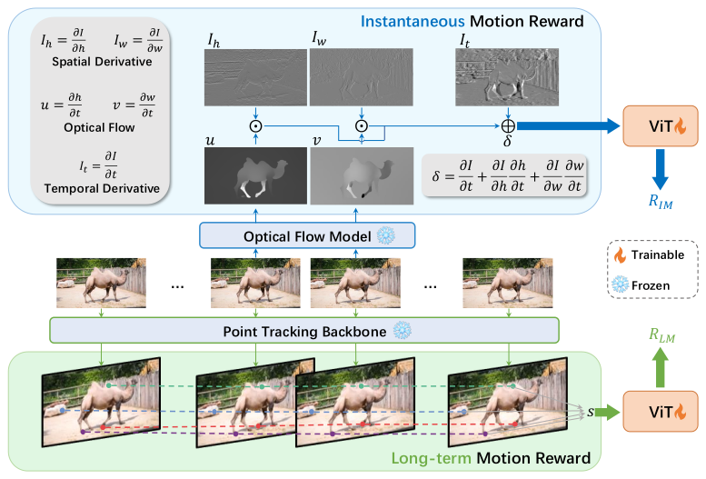
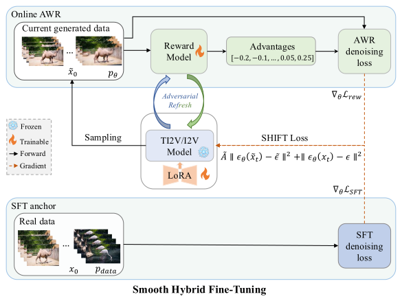

Pixel-motion rewards
IMR and LMR supervise local coherence and sustained dynamics from optical flow and point tracks — no human labels.
Image-conditioned video diffusion models achieve impressive visual realism but often suffer from weakened motion fidelity — reduced dynamics or degraded long-term temporal coherence — especially after fine-tuning. We introduce pixel-motion rewards based on pixel flux dynamics, capturing both instantaneous and long-term motion consistency. We further propose Smooth Hybrid Fine-Tuning (SHIFT), a scalable reward-driven framework that unifies supervised fine-tuning and advantage-weighted fine-tuning. With adversarial advantages, SHIFT improves convergence and mitigates reward hacking, efficiently resolving dynamic-degree collapse in modern video diffusion supervised fine-tuning.


IMR and LMR supervise local coherence and sustained dynamics from optical flow and point tracks — no human labels.
Advantage-weighted regression on rollouts plus an SFT data anchor. Sampler-agnostic; no reverse-trajectory storage.
Co-train the reward discriminator online to track distribution shift and reduce reward hacking.
On SVD and Wan2.2, SHIFT improves motion fidelity, preserves appearance, and trains nearly 8× faster than FlowGRPO.
| Method | Appearance ↑ | Motion ↑ | Overall ↑ | Motion Score ↑ | FVD ↓ | Time ↓ |
|---|---|---|---|---|---|---|
| Base | 83.68 | 85.89 | 84.41 | 4.39 | 395.87 | — |
| SFT | 85.07 | 76.09 | 82.08 | 2.69 | 322.81 | 1× |
| Track4Gen | 85.01 | 76.44 | 82.15 | 2.84 | 316.91 | 1.07× |
| DenseDPO | 83.73 | 86.03 | 84.50 | 4.34 | 399.73 | 2.40× |
| FlowGRPO | 83.61 | 86.67 | 84.63 | 4.44 | 396.56 | 19.35× |
| SHIFT (Ours) | 83.69 | 86.70 | 84.69 | 4.40 | 396.45 | 2.46× |
VBench-I2V on SVD. SFT / Track4Gen improve FVD but collapse motion; SHIFT keeps appearance and lifts motion efficiently.
| Method | Appearance ↑ | Motion ↑ | Overall ↑ | Motion Score ↑ | FVD ↓ |
|---|---|---|---|---|---|
| Base | 86.29 | 86.25 | 86.27 | 2.96 | 284.68 |
| SFT | 87.14 | 83.34 | 85.87 | 1.94 | 151.44 |
| SHIFT (Ours) | 86.38 | 86.45 | 86.40 | 2.93 | 282.24 |
Wan2.2-TI2V on WISA-80K deformation subset. Same pattern: SFT trades motion for FVD; SHIFT balances both.
SHIFT sustains object motion and temporal structure where SFT tends toward overly static videos.
If you find this work useful, please cite:
@inproceedings{ye2026shift,
title = {SHIFT: Motion Alignment in Video Diffusion Models with Adversarial Hybrid Fine-Tuning},
author = {Ye, Xi and Yang, Wenjia and Xu, Yangyang and Liu, Xiaoyang and Su, Duo and Xia, Mengfei and Zhu, Jun},
booktitle = {European Conference on Computer Vision (ECCV)},
year = {2026}
}